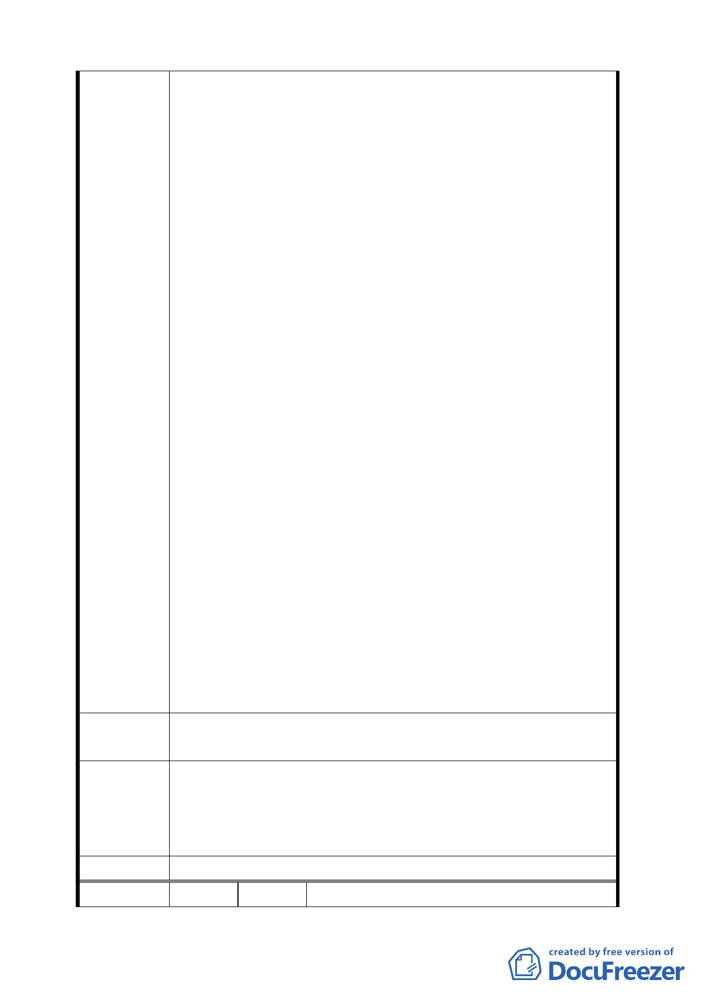

向貴府申請成立自辦市地重劃區籌備會擬辦理相關都市
計畫細部計畫擬訂及環評、水保作業規劃事宜,惟經貴府
以 94.2.3 府地重字第 09404654600 函復未便同意核備在
案,並非本區土地所有權人不作為,而係以負責任態度,
於凝具開發共識(如生態工法、縮小開發規模等),並完成
初步資料調查後,才向貴府提出申請在案,合先敘明。
二、本「住二」經地形測量及坡度分析資料顯示本區坡度在
30%以下面積約佔全區總面積 60%,30%~40%之間面積約佔
全區總面積百分之三十,而坡度超過 40%以上者僅佔全區
總面積百分之十,相較「保變住」其他地區在第一類地區
中誠屬最為平坦地區,且較第二類、第三類大多數地區平
坦,適宜適當開發.本「住二」地區如以地形陡峭,坡地排
水疑慮為由而予回復為保護區,豈非貴府官員顛倒是非,
黑白不分且貴府「都市計畫說明書」第 8 頁表二基本資
料表內本「住二」平均坡度超過 30%以上地區佔全區之
比例 54%亦與本區土地所有權人前調查之資料不相符,且
更與都市計畫說明書內第十頁表三之資料「坡度 30%以
下面積 161740 平方公尺,59.43%」不符,顯見貴府官員於
市政會議中所提供給市長資料,明顯錯誤,並有誤導市府
決策之嫌。
三、本「住二」土地所有權人前曾就開發事宜,凝具所有共識,
願 縮 小 開 發 規 模 , 僅 針 對 坡 度 30% 以 下 地 區 進 行 開
發,30%~40%之間土地規劃為公共設施(如公園、綠地、滯
洪池)且介於坡度 30%~40%之間零星平坦土地亦一併劃歸
為公共設施,而坡度 40%以上者則回歸為保護區,並以大
面積規劃,小面積分期分區開發,施以生態工法等達成本
區為「保變住」開發區示範區。
建 議 辦 法 本案懇請市府官員重新審查,並准予成立自辦市地重劃區籌
備會籌備開發事
本案依自然條件視之理應變更回復為保護區，惟考量變更後
專 案 小 組 地主權益問題繁瑣，在市府（發展局）未能提出一具體可行
審 查 結 論 的配套措施與方案前，本專案小組建議暫仍維持做住宅區不
予變更。
委員會決議 同決議。
編 號 ２ 陳情人 黃文樹等三人（住二）
五